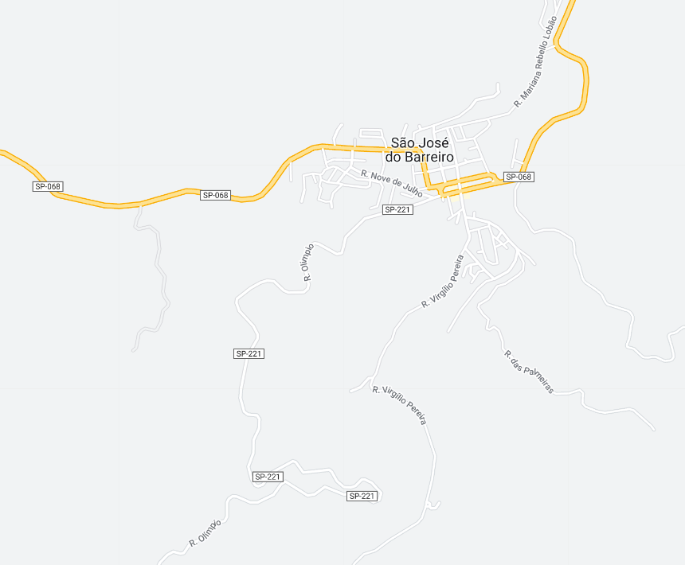

São José do Barreiro - Geodex

Município de São José do Barreiro
-
Populacão: 4.141 pessoas
-
Área: 570,685km²
-
Fundação: 1859
-
Distância da Capital: 268km
No século XVII, os primeiros colonizadores subiram pelo Porto de Mambucaba e pelo rio de mesmo nome, fundando povoações na região. Os tropeiros também passavam por lá, enfrentando dificuldades devido a um atoleiro nas cheias, o que levou à construção de ranchos e à formação gradual de um vilarejo. Em torno de 1820, uma capela dedicada a São José foi erguida no local, originando o nome São José do Barreiro. Com a chegada do cultivo de café, a região prosperou e diversas fazendas e casarões luxuosos foram construídos, alguns dos quais ainda preservados. A Fazenda Pau D'Alho, tombada como Patrimônio Histórico Nacional e Estadual, é um marco histórico e atualmente abriga atividades culturais e ecológicas. A cidade de São José do Barreiro foi elevada a município em 1859 e a estância turística em 1998. Situada a 510 metros de altitude, destaca-se pelo Pico do Tira Chapéu, com 2.088 metros. Reconhecida como o "Paraíso do Trekking no Brasil", a cidade oferece atrações como a Serra da Bocaina, com suas cachoeiras, como a de Santo Izidro e a do Veado, e a Trilha do Ouro, utilizada antigamente para o transporte de ouro de Minas Gerais para o litoral. São José do Barreiro também é a porta de entrada oficial para o Parque Nacional da Serra da Bocaina e oferece várias opções de esportes de aventura, como mountain bike, esportes náuticos na Represa do Funil, off-road, cavalgadas e vôo livre. Além disso, a cidade proporciona passeios familiares pelas antigas fazendas de café e pelas cachoeiras ao redor.